Im Brückle
Herzlich Willkommen im Brückle. Wir sind das erste Bio-Weingut in Gerlingen und betreiben den Weinbau nun schon in der dritten Generation. Im Jahr 2011 haben wir den Betrieb umgestellt und konnten im Herbst 2014 den ersten Bio-Wein ernten. So können Sie bei uns in der Weinlaube verschiedene Weine, Traubensaft und Sekt in Bio-Qualität genießen. Auch unsere Obstanlagen sind auf den biologischen Landbau umgestellt. Die daraus entstehenden Obstbrände stammen aus der eigenen Brennerei und werden ebenfalls in der Weinlaube ausgeschenkt.
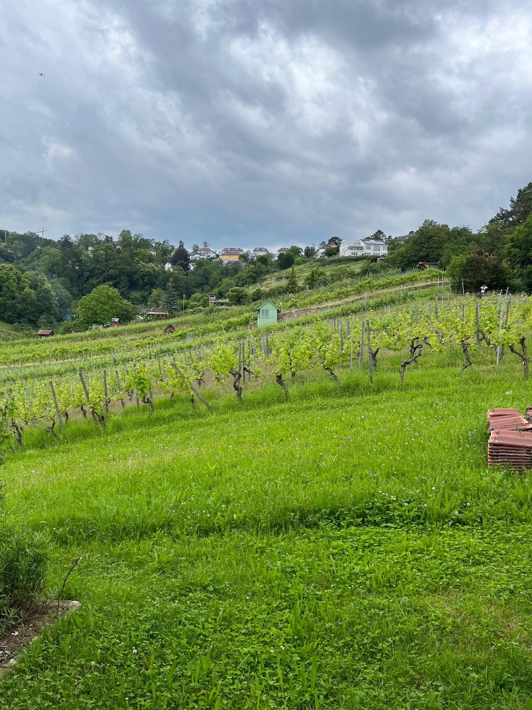
 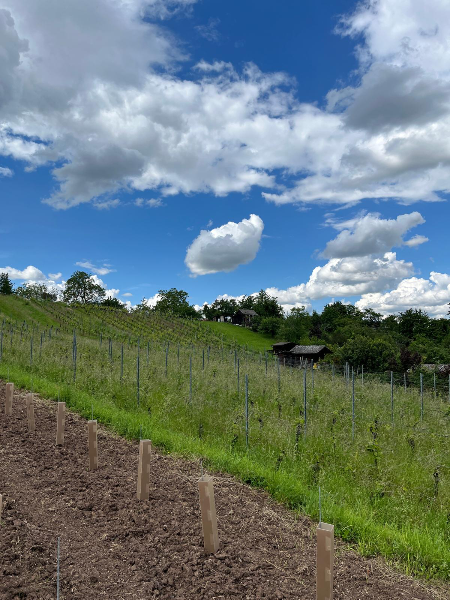
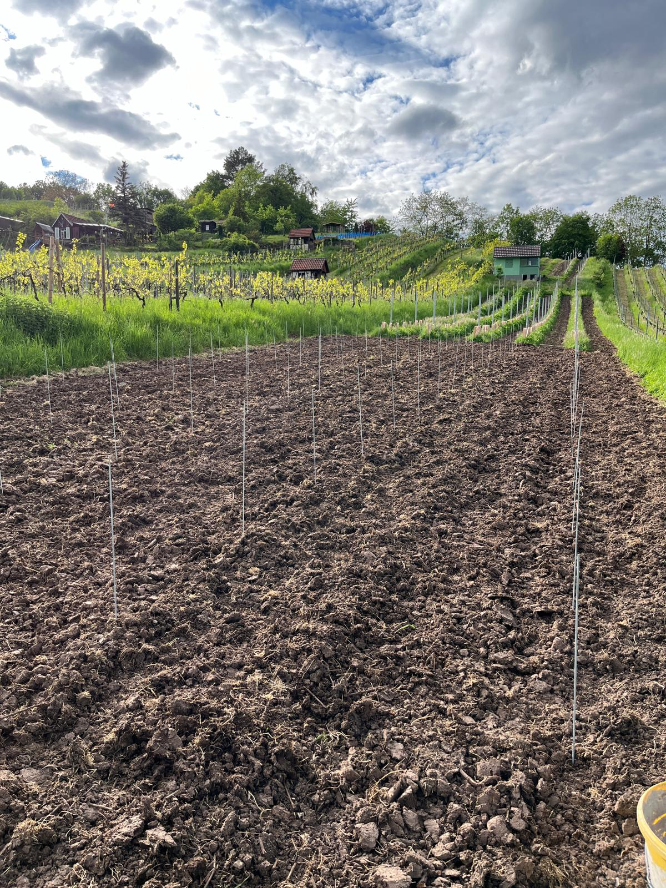
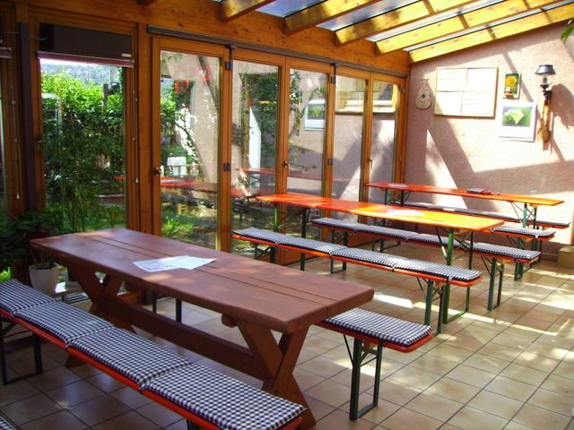
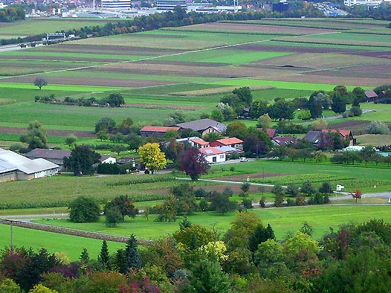
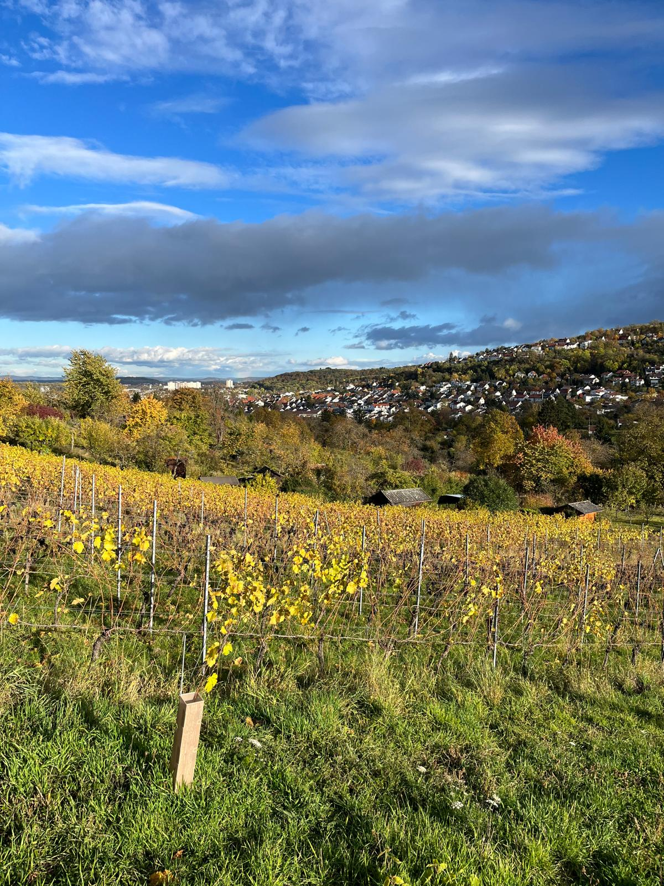
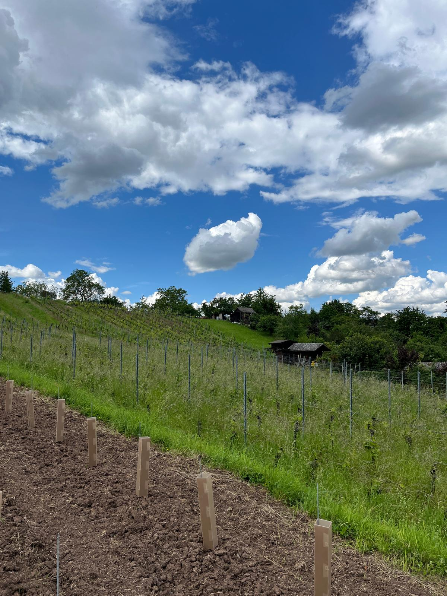
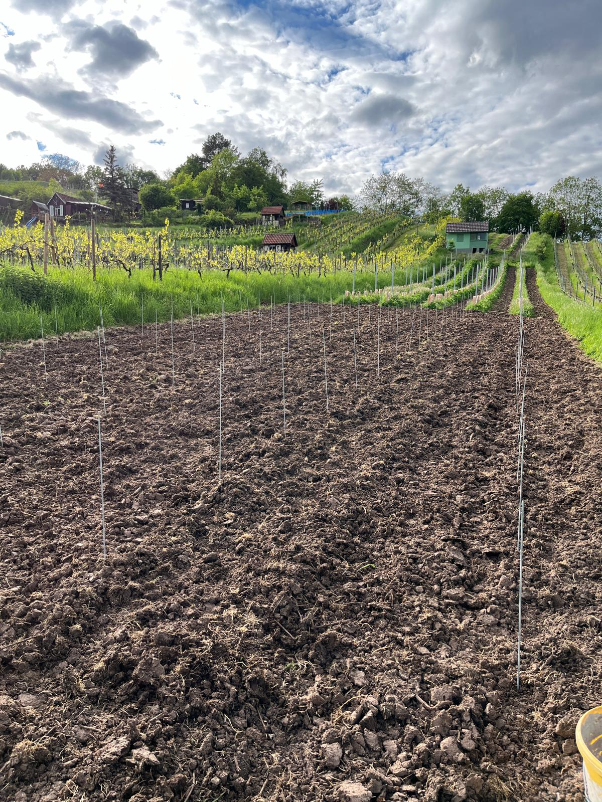
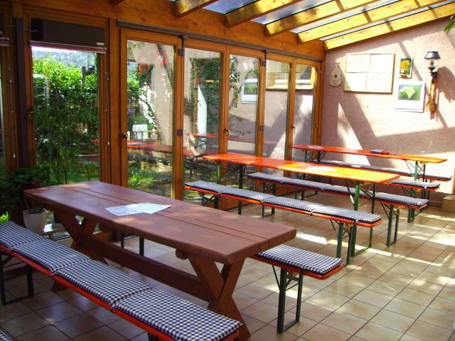
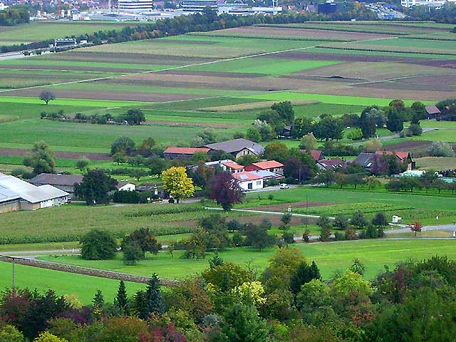
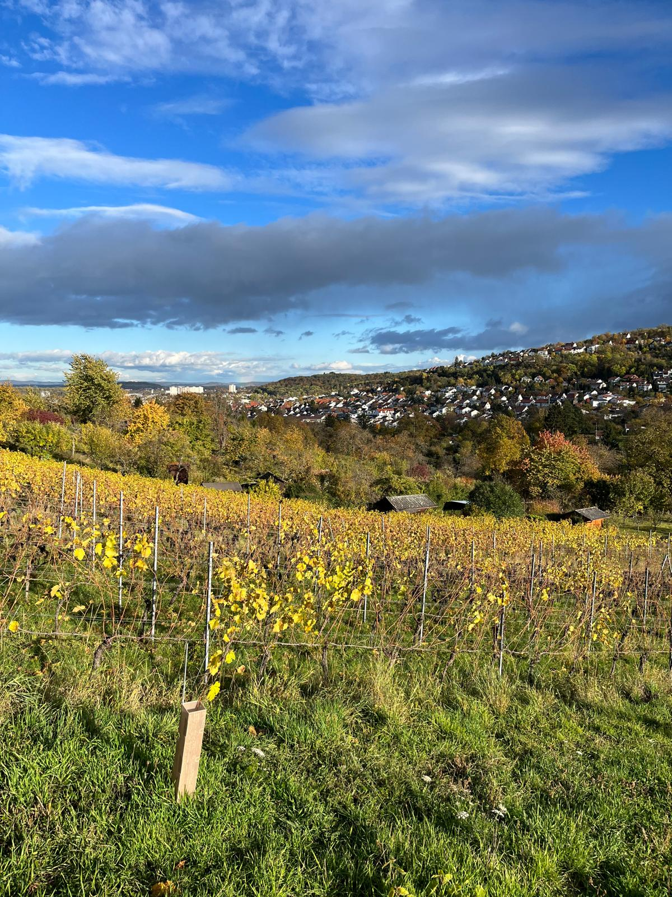
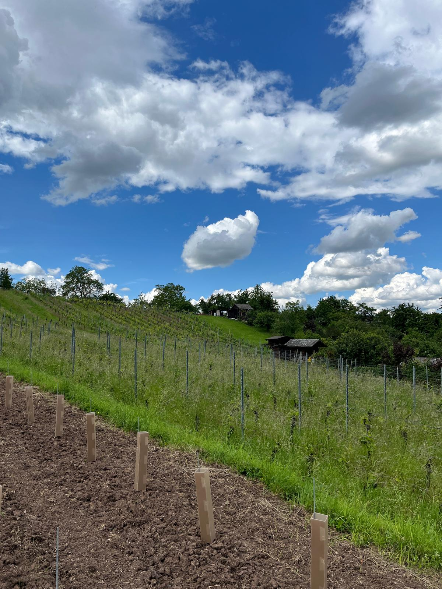
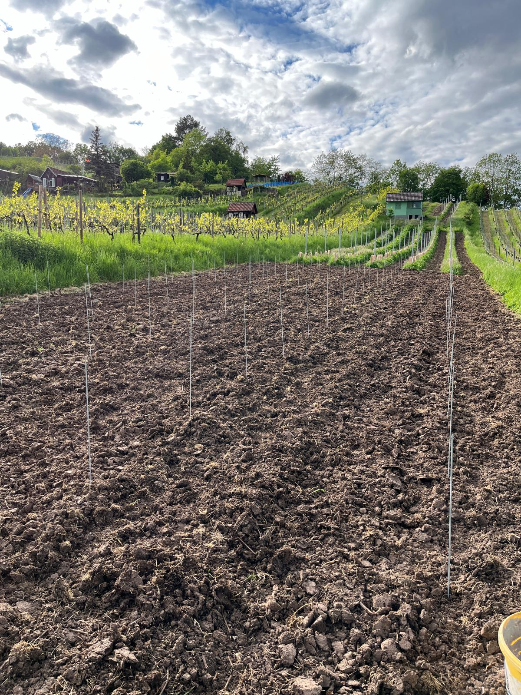
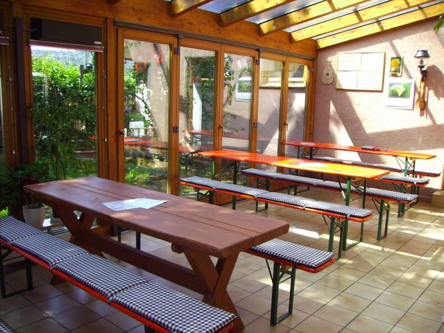
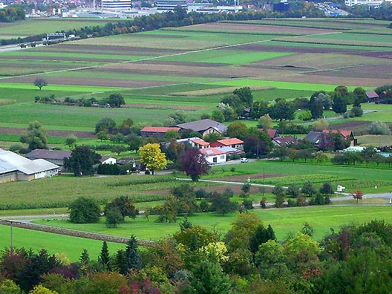
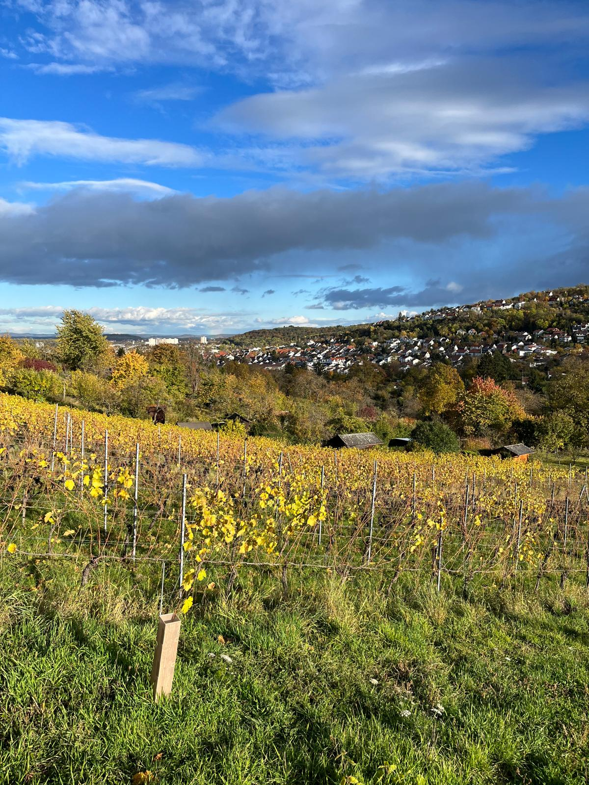